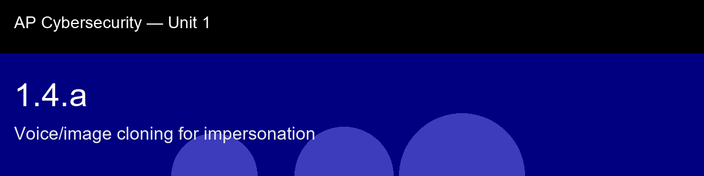

1.4.a recap, Voice/image cloning for impersonation
Nice work today. Here's what to lock in:
- Recap handout:
post-lecture-handout.docx
- Simulation: SimLab
- Self-check quiz: due before next class
The big picture: The phrase "double-stack" in this skill's closing paragraph is worth remembering as a template you'll reapply constantly: a cloned voice defeats your recognition heuristic, and manufactured urgency defeats your verification heuristic, and they're deployed together specifically because each one is disarming a different defense. Whenever an attack combines a trust exploit with a time-pressure exploit, assume it's not an accident, it's the attacker covering both of your natural safety checks at once.
Key terms to lock in:
- Deepfake, synthetic media (audio, image, or video) in which AI replaces or fabricates a person's appearance or voice.
- Voice cloning, fine-tuning a speech-synthesis model on a speaker's audio to produce new utterances in that speaker's voice.
- Vishing, voice-based phishing; often combined with cloned audio.
- Shared secret, a pre-agreed code word used to verify identity out-of-band, defeating audio/video impersonation.
- Out-of-band confirmation, approval over a channel separate from the one being manipulated.
Common misconceptions -- don't fall for these:
- "I can always tell if a voice is fake." → Current cloning quality fools trained humans the majority of the time. Perceptual detection is not a reliable control.
- "Deepfakes require a lot of source material." → Three to ten seconds of audio is sufficient for modern voice cloning; a few public photos suffice for image synthesis.
Learning objective(s): 1.4.A

## 1.4.a recap, Voice/image cloning for impersonation
Nice work today. Here's what to lock in:
- Recap handout: `post-lecture-handout.docx`
- Simulation: SimLab
- Self-check quiz: due before next class
**The big picture:** The phrase "double-stack" in this skill's closing paragraph is worth remembering as a template you'll reapply constantly: a cloned voice defeats your *recognition* heuristic, and manufactured urgency defeats your *verification* heuristic, and they're deployed together specifically because each one is disarming a different defense. Whenever an attack combines a trust exploit with a time-pressure exploit, assume it's not an accident, it's the attacker covering both of your natural safety checks at once.
**Key terms to lock in:**
- **Deepfake**, synthetic media (audio, image, or video) in which AI replaces or fabricates a person's appearance or voice.
- **Voice cloning**, fine-tuning a speech-synthesis model on a speaker's audio to produce new utterances in that speaker's voice.
- **Vishing**, voice-based phishing; often combined with cloned audio.
- **Shared secret**, a pre-agreed code word used to verify identity out-of-band, defeating audio/video impersonation.
- **Out-of-band confirmation**, approval over a channel separate from the one being manipulated.
**Common misconceptions -- don't fall for these:**
- "I can always tell if a voice is fake." → Current cloning quality fools trained humans the majority of the time. Perceptual detection is not a reliable control.
- "Deepfakes require a lot of source material." → Three to ten seconds of audio is sufficient for modern voice cloning; a few public photos suffice for image synthesis.
**Learning objective(s):** 1.4.A